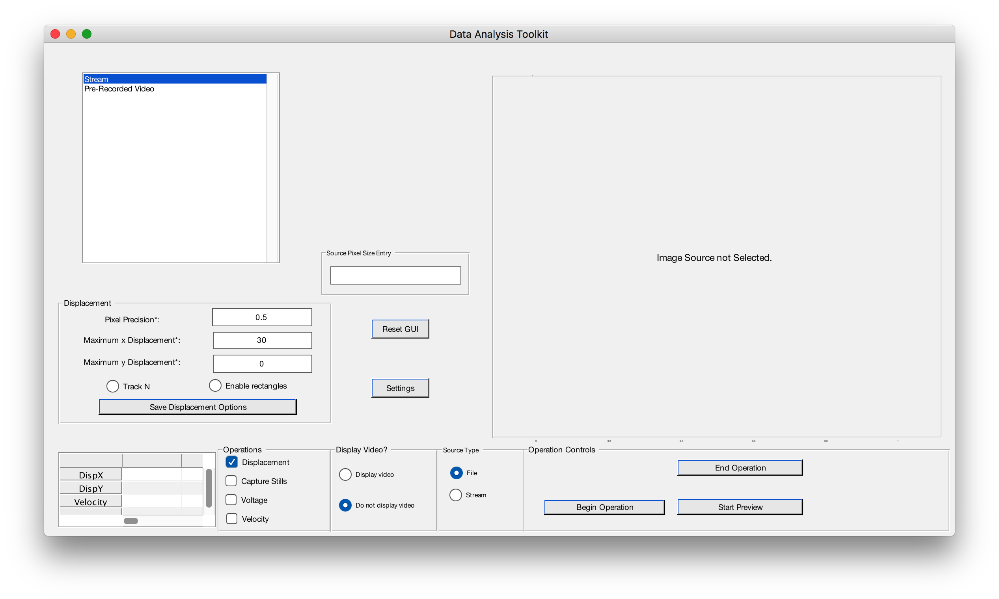
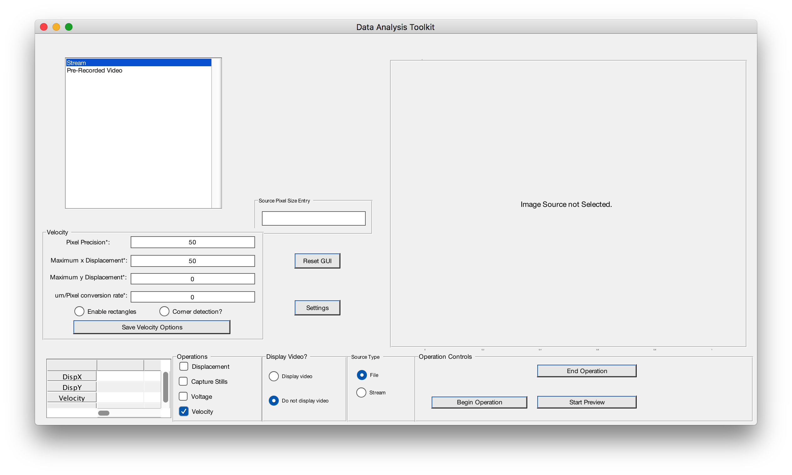

MAAP is a set of tools used for tracking the movement of objects.
Download the source files.
git clone https://github.com/wfehrnstrom/MAAPAdd the directory to your Matlab Path. Make sure to Add with Subfolders… when you do so.
Click on the Home tab, and the Set Path button will be in the Environment section.
Note: It is suggested that you do not add the entire directory in order to avoid the .git directory that would be added.
In order to start the gui, run the ui/data_gui.m file
There are currently two operations that are currently supported
In both cases, you first need to pick the video file you want to act one.
While it is possible to use a streaming video, this feature is not very well tested. As such this documentation will go assume that a file as been picked
Click on the Pre-Recorded Video option in the list shown in the image above to get begin browsing your files.
Once you choose a file, simply click it. When it is highlighted blue, it is selected.
Choose the Operation you would like. Although there are four options, only Displacement and Velocity is supported.
Notice that although the buttons are not radio buttons (and it is possible to select more than one) the application will only do one of them. Currently, the operations are listed in the order of precedence (If you pressed Displacement then Velocity, it would do the Displacement Operation; If you picked Velocity then Displacement, it would still do the Displacement Operation).
 
We'll first go through how to use the displacement operation
If you're only trying to track 1 item, fill in the fields appropriately.
0.5. However, the smaller the number, the longer the operation will take0 if you don't care about one direction of movement.Once you put the values in, if you would like to save those values, simply press the Save Displacement Variables button. The next time you open the gui, those fields will be filled in automatically.
Once these fields are inputted, press Begin Operation on the right hand side. You'll be prompted to give an input of what you want to track. Simply click and drag to create a blue box around the object you would like to track and double click inside that box. The operation will commence!
There are several options now at your disposal. - Enable rectangles button: This will show the blue box around the object you're tracking as the video plays - Track N button: This will allow you to track more than one object at a time
As you can see, to track multiple object, you need to input different Maximum _ Displacement values for each object. Separate them with commas. In the above example, you would be trying to track 3 objects.
Velocity is similiar to Displacement.
The only difference is the um/Pixel rate. - um/Pixel: The conversin rate from pixel to micrometers. If this isn't of concern and you would only like to know the movement in relation to pixel, simply put in 1. While the velocity values will be wholly incorrect (as it'll treat 1pixel=1um), you can simply do multiply by a conversion rate later.
There are several options at your disposal - Enable rectangles is the same as before - Corner dtection? is a specific implementation for use in the Swarm Lab. In general, don't use it.
By default, the application won't show you the video as it records data. In order to see it, simply toggle the Display video button.
After the application is complete, the data is saved in the saved_data directory with the following format:
OperationName.DD-Mon-YYYY HH:MM:SS.csv